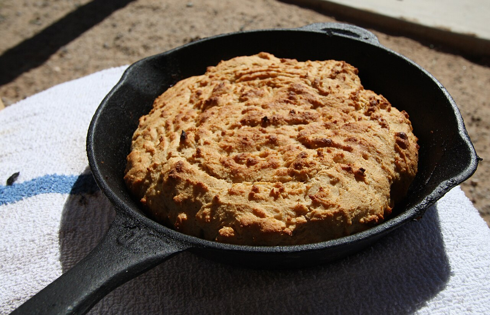
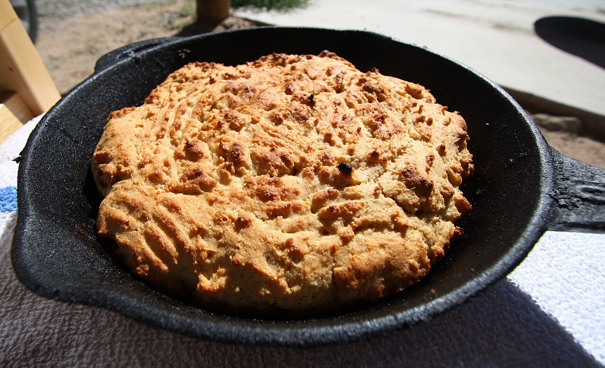

a dishcornbread
also: corn bread · corn sticks · cornsticks · bread
'Bread' on an eastern menu board means the corn stick or the cornbread square; the sandwich roll is light bread.

A quick bread of cornmeal — meal, water or buttermilk, salt, fat, often egg and soda — baked in a pan, a skillet or a stick mould. It comes with eastern North Carolina barbecue in two forms. At the Skylight Inn in Ayden it is a flat, dense cake of stone-ground cornmeal, water, salt and the day's hog drippings, spread thin on a sheet pan, baked and cut in squares; Our State calls it more grit cake than bread. At Parker's, B's, Bum's and a third of the pits in six Coastal Plain counties it is the corn stick, an eight-inch baton of meal, fat and boiling water, baked, then deep-fried. West of the Coastal Plain the bread is hushpuppies.
Corn pone, the egg-less and milk-less dough baked in an iron pan, keeps the older name; in the Appalachians a round of cornbread baked in a skillet is still a 'pone'. Cited · wp-cornbread
The story Cited · wp-cornbread
Cornbread is the older bread of the South. Wheat withered and turned rancid in the heat and humidity, so the colonies baked ground corn and water over the fire or in the hearth, a bread learned from Native cooks; buttermilk, eggs, soda and pork fat came into it in the 1700s and 1800s, and sugar and wheat flour mostly in the 1900s, when steel roller mills replaced stone ones and the meal lost sweetness and turned from white to yellow. The Skylight Inn's cornbread stays on the old side of that line: cornmeal, water, salt and pork drippings, made the same way since Pete Jones opened in 1947, and served at his grandson Sam Jones's restaurants as 'Skylight Inn-style cornbread'. The corn stick is younger than it looks. Bob Melton's Rocky Mount restaurant, the state's first sit-down barbecue house, served cornsticks beside boiled potatoes and hushpuppies from 1924 until it closed in 2005, and NCpedia lists baked corn sticks first among the Coastal Plain's sides; but nearly every corn stick sold in the region now comes from Atkinson's Mills in Selma, which began making them in the mid-to-late 1970s. In the six counties around Wilson and Greenville about one pit in three serves them and the rest serve hushpuppies, and on B's menu board in Greenville they are simply 'bread'.
How it is done Cited · web-foodrepublic-skylight-cornbread
The Skylight cake is stone-ground cornmeal stirred with water and salt to a pourable batter, enriched with drippings from the pit, spread on a sheet pan and baked until it sets and browns; it comes out coarse, heavy and chewy, and is cut in squares for the tray. A corn stick is meal, fat and boiling water with a little soda, baked in an eight-inch stick and then dropped in the fryer, so that most of it is crisp and the middle soft; the grease keeps it from drying out the way a hushpuppy does, and it reheats. At B's the corn sticks are the plate's bread; at Bum's cornbread sits on the buffet with the vegetables. Skillet cornbread — batter poured into hot fat in a cast-iron pan — is the home form.
Today Cited · web-foodrepublic-skylight-cornbread
Skylight Inn serves it on every tray and sells it by the slice, a dollar each in September 2025; Sam Jones BBQ in Winterville and Raleigh lists 'Skylight Inn-style cornbread' with the Jones Family Original tray (2026). Parker's in Wilson sells cornsticks and hushpuppies both by the bulk order and puts hushpuppies on every plate. Corn sticks hold in six counties; the rest of the state fries hushpuppies.
Facts
| course | bread |
|---|---|
| styles | Eastern North Carolina barbecue |
| region | Eastern North Carolina, North Carolina, The Carolinas, The American South |
| links | Cornbread — Wikipedia · The Food Section — Beating uniformity with a corn stick · Food Republic — the Skylight Inn's two-ingredient cornbread |
| confidence | high · updated 2026-09-15 |
Recipes you may use
Public-domain cookbooks are printed here in full, spelling and all. Where a recipe is still in copyright, the page gives the ingredients — a list of what goes in is a fact — and links to the rest.
Southern Cornbread
- 2 cups yellow or white self-rising corn meal
- 1 large egg
- 1¼–1½ cups buttermilk or whole milk
- ¼ cup olive oil or vegetable oil
Unsweetened, in a cast-iron skillet; the form a Carolina kitchen bakes at home.
Cornbread I
- 1 cup (140 g / 4.9 oz) cornmeal
- 1 cup (140 g / 4.9 oz) all-purpose flour
- 4 tsp baking powder
- ½ tsp salt
- 1 cup (250 ml / 8.5 fl oz) milk
- 1 ea. (50 g) egg
- ¼ cup (60 g / 2.1 oz) shortening, melted
- ¼ cup (55 g / 1.9 oz) white granulated sugar (optional)
- ½ of a can whole corn kernels, drained (optional)
- ¼ ea. onion, finely chopped (optional)
Makes 8 servings.
Corn Meal Bread
A yeast-risen cornmeal bread, from the first cookbook of the American South. The dash is Mrs. Randolph's punctuation.
Batter Bread
Batter bread is the loose, spoonable cornbread — the ancestor of spoonbread; 'little tin moulds' are the forerunner of the stick mould that makes an eastern corn stick.
Indian Hoe Cakes
Indian meal is cornmeal. The method is borrowed from the receipt for pumpkin hoe cakes on the same page, which is quoted here in brackets so the receipt can be followed; the brackets are this site's, everything inside them is the book's.
Not to be confused with
- hushpuppies — A hushpuppy is a fried ball or finger of batter, light inside. A corn stick is a baked-then-fried baton the length of a hand; Skylight's cornbread is a flat baked square. Fried and round means hushpuppy.
- light bread — Light bread is the soft white roll under the sandwich; cornbread is cornmeal and comes with the tray.
Its kin
Pages that point here
Pictures
{kind=link}

{kind=link}
Sources
- Cornbread — Wikipedia · link
- Skylight Inn BBQ — Wikipedia · link
- This North Carolina BBQ Restaurant Only Uses 2 Ingredients To Make Cornbread (Nikita Ephanov, 2025-09-30) · link
- Pitmaster of Pitt County: Sam Jones Upholds Family Legacy Established at Skylight Inn (Billy Ball, 2016-02-12) · link
- Menu · link
- Beating uniformity with a corn stick (S. Farhan Mustafa, 2025-03-24) · link
- Melton's Barbecue — Wikipedia · link
- NCpedia — Barbecue (Encyclopedia of North Carolina) · link
- Eastern NC Whole Hog Tour: B's Barbecue – Greenville, NC (Monk, 2022-05-02) · link
- BBQ Jew's View: B's Barbecue (Porky LeSwine, 2011-04-18) · link
- Bum's Restaurant — Latham 'Bum' Dennis and Larry Dennis, interviewed by Rien T. Fertel, 5 Dec 2011 · link
- Menu (no prices posted) · link
- The Original Parker's BBQ of Wilson, NC · link
- Barbecue in North Carolina — Wikipedia · link
- Whole hog barbecue — Wikipedia · link
- Cookbook:Southern Cornbread — Wikibooks Cookbook · link
- Cookbook:Cornbread I — Wikibooks Cookbook · link
- The Virginia House-Wife, or Methodical Cook — Mrs. Mary Randolph, 1824 · link
- The Kentucky Housewife, Containing Nearly Thirteen Hundred Full Receipts — Mrs. Lettice Bryan, 1839 · link
Provenance marks: Cited a named source, linked · Harvested fetched from an open dataset · Tradition general knowledge of the tradition, hedged · Inference this project's reasoning · Field someone stood there. This record as JSON.